Plotting examples
Plotters
All plot functions in GridVisualize.jl have a Plotter keyword argument which defaults to nothing. This allows to pass a module as plotting backend without creating a dependency. Fully supported are PyPlot, GLMakie and PlutoVista. WGLMakie and CairoMakie work in principle but in the moment don't deliver all necessary functionality. For Plots we miss the possibility to work with triangle meshes (this is under development, though)
Also supported is VTKView which is exeprimental and works only on linux.
Grid plots
Here, we define some sample grids for plotting purposes.
using ExtendableGrids
using GridVisualize1D grids
function grid1d(; n = 50)
X = collect(0:(1 / n):1)
g = simplexgrid(X)
end
function plotting_grid1d(; Plotter = default_plotter(), kwargs...)
gridplot(grid1d(); Plotter = Plotter, resolution = (500, 200), kwargs...)
end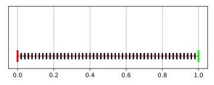
2D grids
function grid2d(; n = 20)
X = collect(0:(1 / n):1)
g = simplexgrid(X, X)
end
function plotting_grid2d(; Plotter = default_plotter(), kwargs...)
gridplot(grid2d(); Plotter = Plotter, kwargs...)
end
3D grids
The kwargs xplane, yplane and zplane which allow to control cutplanes which peel off some elements from the grid in 3d and allow to explore the inner triangulation.
For Makie and VTKView, the cutplane values can be controlled interactively.
function grid3d(; n = 15)
X = collect(0:(1 / n):1)
g = simplexgrid(X, X, X)
end
function plotting_grid3d(; Plotter = default_plotter(), kwargs...)
gridplot(grid3d(); Plotter = Plotter, kwargs...)
end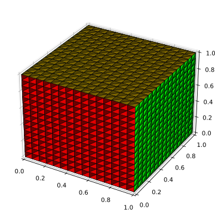
Function plots
Function on 1D grid
function func1d(; n = 50)
g = grid1d(; n = n)
g, map(x -> sinpi(2 * x[1]), g)
end
function plotting_func1d(; Plotter = default_plotter(), kwargs...)
g, f = func1d()
scalarplot(g, f; Plotter = Plotter, resolution = (500, 300), kwargs...)
end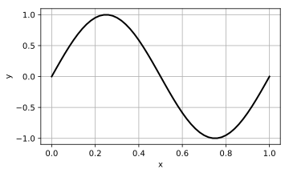
Function on 2D grid
function func2d(; n = 20)
g = grid2d(; n = n)
g, map((x, y) -> sinpi(2 * x) * sinpi(3.5 * y), g)
end
function plotting_func2d(; Plotter = default_plotter(), kwargs...)
g, f = func2d()
scalarplot(g, f; Plotter = Plotter, levels = 10, kwargs...)
end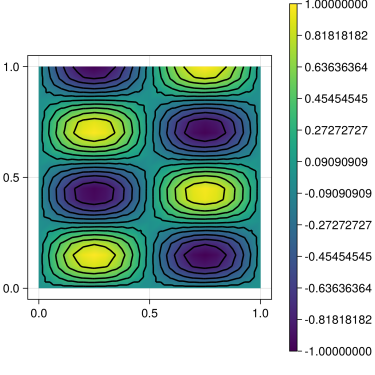
Function on 3D grid
Plotting a function then goes as follows: xplane, yplane and zplane now define cut planes where the function projection is plotted as a heatmap. The additional flevel keyword argument allows to control an isolevel.
For Makie and VTKView, the cutplane values and the flevel can be controlled interactively.
function func3d(; n = 15)
g = grid3d(; n = n)
g, map((x, y, z) -> sinpi(2 * x) * sinpi(3.5 * y) * sinpi(1.5 * z), g)
end
function plotting_func3d(;
Plotter = default_plotter(),
xplanes = [0.49],
yplanes = [0.49],
zplanes = [0.49],
levels = 5,
kwargs...,)
g, f = func3d()
scalarplot(g, f; Plotter = Plotter, levels, xplanes, yplanes, zplanes, kwargs...)
end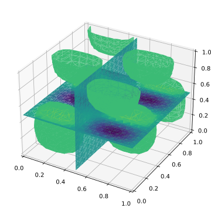
Vector and stream plots
2D vector
function vec2d(; n = 20)
g = grid2d(; n = n)
g,
vcat(map((x, y) -> sinpi(2 * x) * sinpi(3.5 * y), g)',
map((x, y) -> cospi(2 * x) * cospi(3.5 * y), g)')
end
function plotting_vec2d(; Plotter = default_plotter(), kwargs...)
g, f = vec2d()
vectorplot(g, f; Plotter = Plotter, kwargs...)
end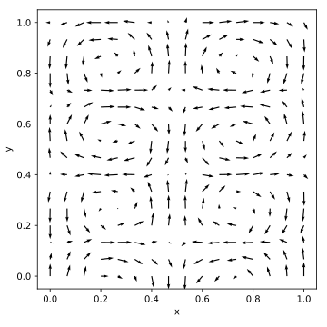
2D stream
Stream plots are currently only available with PyPlot and Makie
function plotting_stream2d(; Plotter = default_plotter(), kwargs...)
g, f = vec2d()
GridVisualize.streamplot(g, f; Plotter = Plotter, spacing = 0.01, kwargs...)
end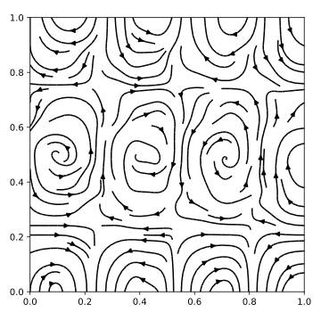
Movie
Movies can contain any of the previous plots.
function plotting_movie(; filename = "plotting_video.gif", Plotter = default_plotter())
vis = GridVisualizer(; Plotter = Plotter, size = (600, 200), layout = (1, 2))
X = 0:0.2:10
grid = simplexgrid(X, X)
movie(vis; file = filename) do vis
for t = 0:0.1:10
f = map((x, y) -> sin(x - t) * cos(y - t), grid)
g = map((x, y) -> sin(t) * sin(x) * cos(y), grid)
scalarplot!(vis[1, 1],
grid,
f;
clear = true,
title = "t=$(t)",
limits = (-1, 1),
levels = 7,
colormap = :hot)
scalarplot!(vis[1, 2],
grid,
g;
clear = true,
title = "t=$(t)",
limits = (-1, 1),
levels = 7,
colormap = :hot)
reveal(vis)
end
end
end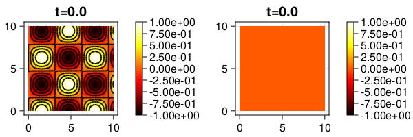
Multiscene plots
We can combine multiple plots into one scene according to some layout grid given by the layout parameter.
This is not currently supported by the PlutVista backend.
The ',' key for GLMakie and the '*' key for VTKView allow to switch between gallery view (default) and focused view of only one subscene.
function plotting_multiscene!(p)
gridplot!(p[1, 1], grid1d(); title = "1D grid", legend = :rt)
scalarplot!(p[2, 1],
grid1d(),
sin;
title = "1D grid function",
label = "sin",
markershape = :diamond,
color = :red,
legend = :rb,)
scalarplot!(p[2, 1],
grid1d(),
cos;
title = "1D grid function",
label = "cos",
linestyle = :dash,
markershape = :none,
color = :green,
clear = false,)
gridplot!(p[1, 2], grid2d(); title = "2D grid")
scalarplot!(p[2, 2], func2d()...; colormap = :bamako, title = "2D grid function")
gridplot!(p[1, 3], grid3d(); zplane = 0.49, title = "3D grid")
scalarplot!(p[2, 3],
func3d()...;
zplane = 0.49,
flevel = 0.5,
colormap = :bamako,
title = "3D grid function",)
vectorplot!(p[1, 4], vec2d()...; title = "2D quiver")
GridVisualize.streamplot!(p[2, 4], vec2d()...; title = "2D stream")
reveal(p)
end
function plotting_multiscene(; Plotter = default_plotter(), resolution = (1000, 500))
plotting_multiscene!(GridVisualizer(;
Plotter = Plotter,
layout = (2, 4),
clear = true,
resolution = resolution,))
end
Plots of functions on subgrids interfaces
We can jointly plot functions on different subgrids whic e.g. model a particle density jumping at a heterointerface Currently supported for PyPlot and Makie
The general scheme is to pass a vector of subgrid, the parent grid and the corresponding vector of functions on the respective subgrids
1D case
function plotting_jfunc1d(; Plotter = default_plotter(), filename = "plotting_jfunc1d.gif")
X = 0:1:10
g = simplexgrid(X)
cellmask!(g, [0], [5], 2)
g1 = subgrid(g, [1])
g2 = subgrid(g, [2])
vis = GridVisualizer(; Plotter, color = :red)
movie(vis; file = filename) do vis
for t = 0:0.05:1
func1 = map((x) -> x - t, g1)
func2 = map((x) -> -x + t, g2)
func = map(x -> x^2 / 100 - t, g)
scalarplot!(vis,
[g1, g2],
g,
[func1, func2];
Plotter,
elevation = 0.1,
clear = true,
color = :red,)
scalarplot!(vis,
g,
func;
Plotter,
elevation = 0.1,
clear = false,
color = :green,)
reveal(vis)
end
end
end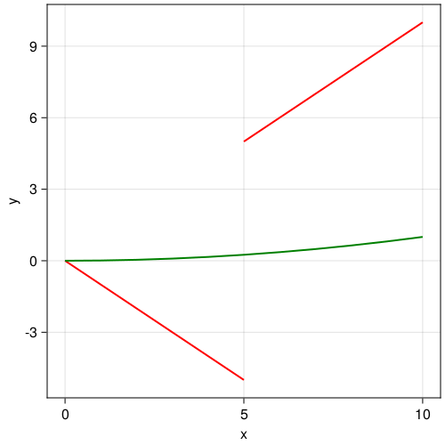
2D case
function plotting_jfunc2d(; Plotter = default_plotter(), kwargs...)
X = 0:0.7:10
g = simplexgrid(X, X)
cellmask!(g, [0, 0], [5, 5], 2)
g1 = subgrid(g, [1])
g2 = subgrid(g, [2])
func1 = map((x, y) -> x^2 + y, g1)
func2 = map((x, y) -> (x + y^2), g2)
scalarplot([g1, g2], g, [func1, func2]; Plotter, kwargs...)
end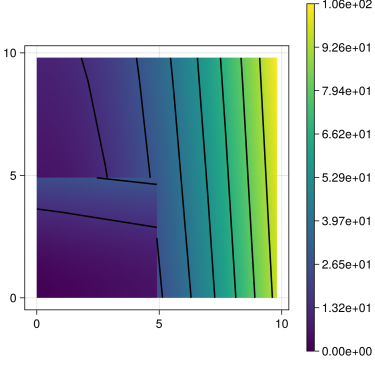
3D case
function plotting_jfunc3d(;
Plotter = default_plotter(),
levels = 0,
yplane = 0.25,
xplane = 0.25,
zplane = 0.25,
levelalpha = 1,
colormap = :hot,
kwargs...,)
X = 0:0.1:1
g = simplexgrid(X, X, X)
cellmask!(g, [0, 0, 0], [0.5, 0.5, 0.5], 2)
g1 = subgrid(g, [1])
g2 = subgrid(g, [2])
func1 = map((x, y, z) -> (x + y + z), g1)
func2 = map((x, y, z) -> (3 - x - y - z), g2)
scalarplot([g1, g2],
g,
[func1, func2];
Plotter,
levels,
xplane,
yplane,
zplane,
levelalpha,
colormap,
kwargs...,)
end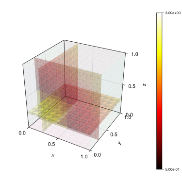
This page was generated using Literate.jl.